Rome traverse les siècles sans perdre sa magie
Explore Rome entre monuments antiques, cafés italiens, ruelles historiques, rooftops et gastronomie italienne.
Colisée • Vatican • Trastevere • Pasta • Football italien
Le Colisée, le Forum Romain et le Vatican rendent Rome intemporelle.
Pasta, pizzas, trattorias et cafés emblématiques dans toute la ville.
Trastevere, Piazza Navona et les plus belles vues sur Rome.
AS Roma, Lazio et l’ambiance unique du football romain.
Rome est l'une des villes les plus fascinantes d'Europe. Capitale de l'Italie, elle mêle monuments antiques, patrimoine religieux, gastronomie renommée et art de vivre méditerranéen.
Du Colisée au Vatican, de Trastevere aux places historiques du centre-ville, chaque quartier raconte une partie de l'histoire romaine et offre une atmosphère unique.
Entre visites culturelles, spécialités italiennes, couchers de soleil panoramiques et football passionné, Rome séduit aussi bien les voyageurs en quête d'histoire que les amateurs d'expériences locales.
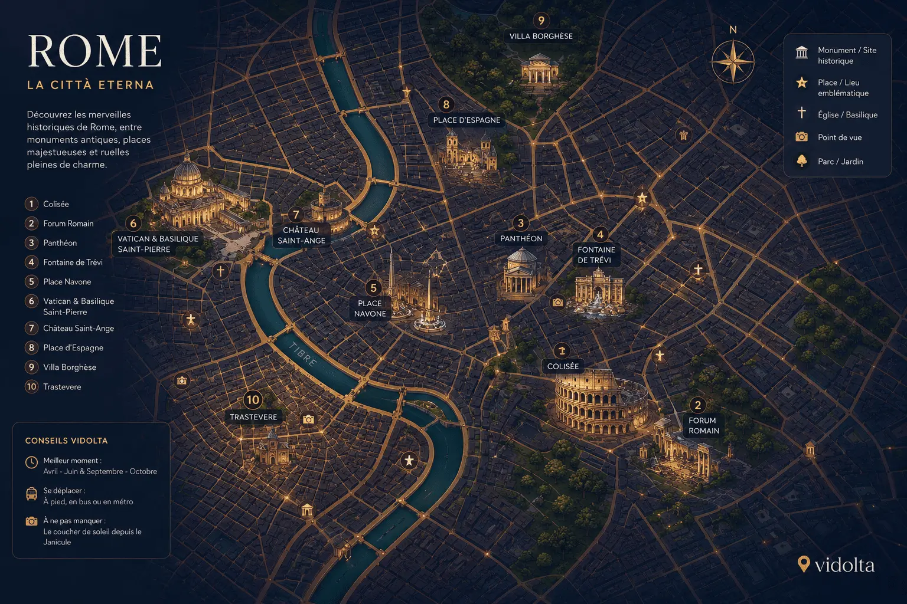
Au-delà du Colisée et du Vatican, certaines expériences permettent de découvrir une Rome plus authentique, plus locale et souvent plus mémorable que les visites classiques.
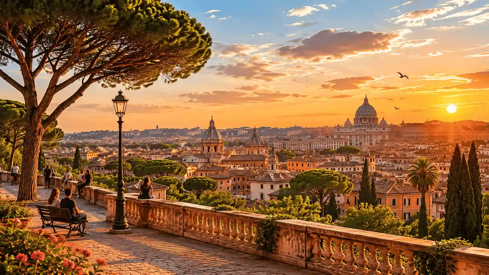
La colline du Janicule offre l'un des plus beaux panoramas sur Rome. Au coucher du soleil, les dômes, les clochers et les toits de la ville se parent de couleurs dorées.
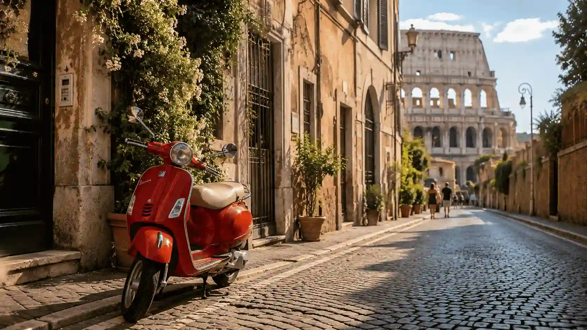
Découvrez Rome à l’arrière d’une Vespa italienne et profitez de vues emblématiques sur le Colisée, le Janicule ou encore Trastevere tout en vivant l'une des expériences les plus emblématiques de la capitale italienne.
Réserver l’expérience →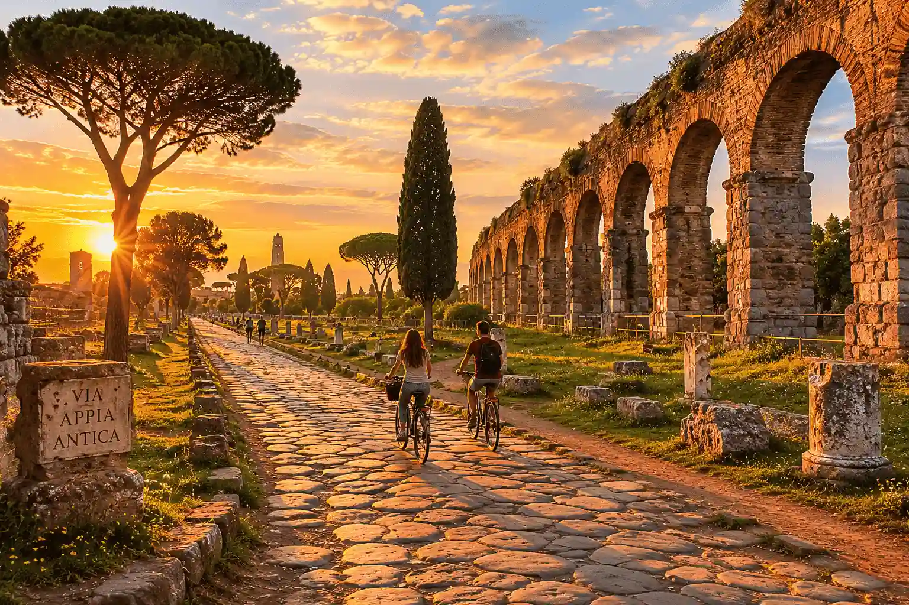
Quittez le centre historique pour découvrir une autre facette de Rome. Entre la célèbre Voie Appienne, les catacombes souterraines et les impressionnants aqueducs antiques, cette excursion plonge au cœur de l'histoire romaine.
Découvrir l’expérience →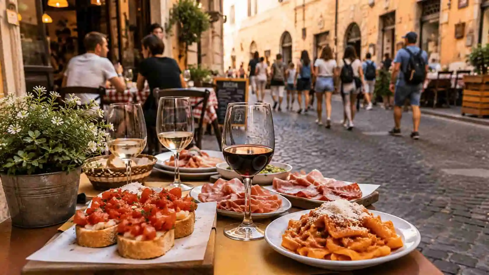
Découvrir la carbonara, la cacio e pepe, les supplì ou encore les gelati artisanaux permet d'explorer Rome à travers sa gastronomie et ses traditions culinaires.
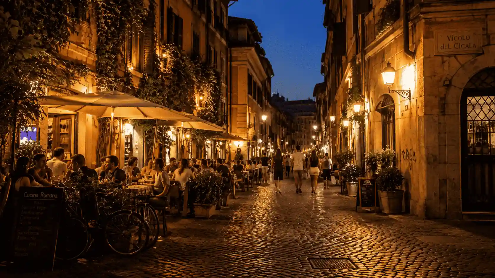
À la tombée de la nuit, Trastevere devient l'un des quartiers les plus vivants de Rome avec ses restaurants, ses terrasses, ses artistes de rue et ses ruelles animées.
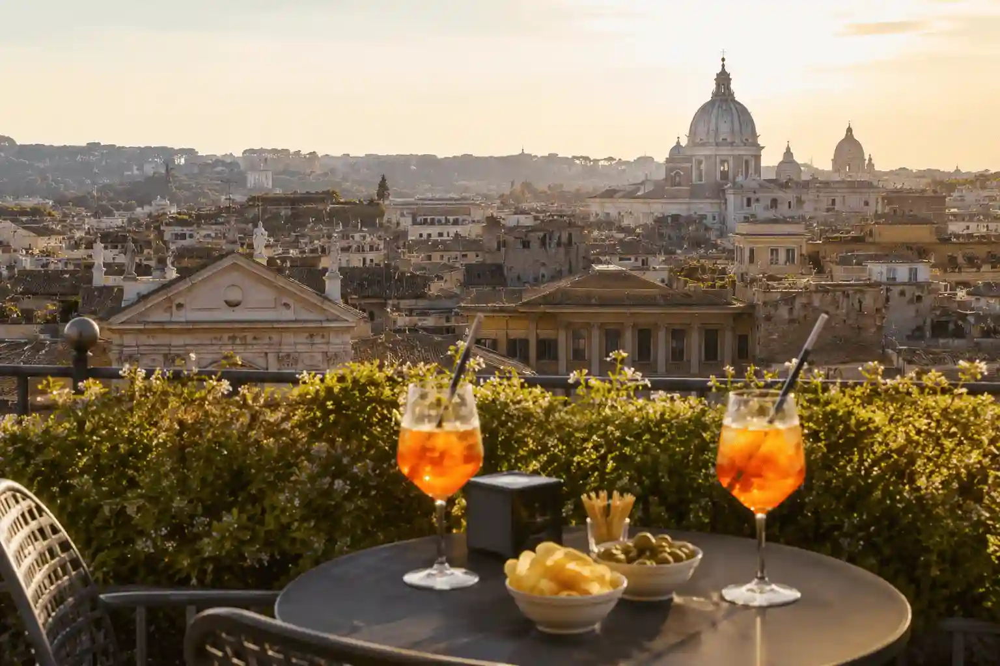
L'aperitivo est une véritable institution à Rome et dans toute l'Italie. Entre 18h et 21h, les Romains se retrouvent autour d'un Spritz, d'un Negroni ou d'un verre de vin accompagné d'antipasti avant le dîner.
📍 Quartiers recommandés : Trastevere, Monti et Testaccio.
🕒 Heure idéale : entre 18h et 21h.
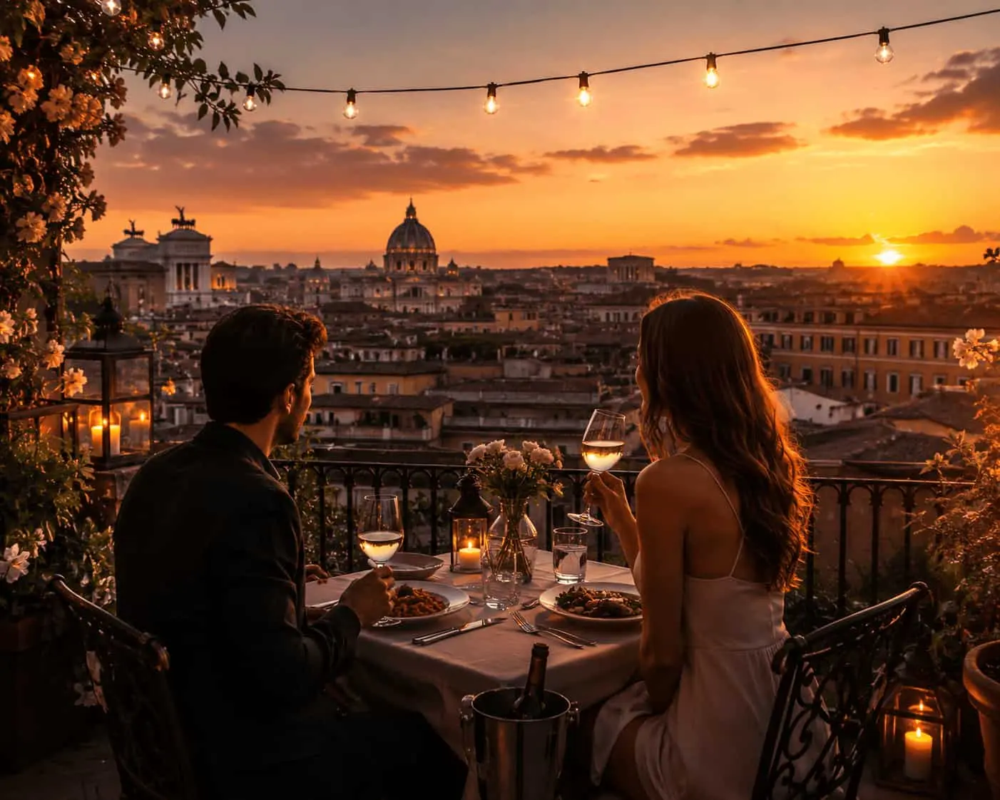
Pour un dîner inoubliable, un anniversaire de couple ou même une demande en mariage, plusieurs restaurants rooftop offrent un cadre exceptionnel lorsque le soleil se couche sur Rome.
Face à la coupole de Saint-Pierre, aux monuments illuminés ou aux toits de la ville éternelle, ces adresses comptent parmi les expériences les plus romantiques de Rome.
Découvrir les adresses →L'un des quartiers les plus authentiques de Rome. Restaurants, terrasses, ruelles pavées et ambiance locale en font un excellent choix pour découvrir la ville autrement.
Idéal pour une première visite. À proximité du Panthéon, de la Fontaine de Trevi et de Piazza Navona, ce quartier permet d'explorer facilement les principaux monuments.
Situé près du Colisée, Monti est un quartier tendance apprécié pour ses cafés, ses boutiques indépendantes et son atmosphère plus décontractée.
À deux pas du Vatican, Prati offre un environnement élégant, calme et bien desservi, idéal pour les voyageurs recherchant davantage de tranquillité.
L'un des quartiers les plus paisibles de Rome. Ses jardins, ses vues panoramiques et son ambiance résidentielle séduisent les visiteurs en quête de sérénité.
Comparez les hébergements dans les meilleurs quartiers de Rome.
Quelques informations pratiques permettent de préparer plus facilement votre séjour à Rome, que ce soit pour organiser vos visites, votre budget ou choisir la meilleure période pour partir.
L'italien est la langue officielle. Dans les zones touristiques, de nombreux professionnels parlent également anglais.
L'euro (€) est utilisé partout à Rome. Les cartes bancaires sont acceptées dans la majorité des hôtels, restaurants et commerces.
L'Italie utilise principalement les prises de type C, F et L avec une tension de 230 V. Les voyageurs européens n'ont généralement pas besoin d'adaptateur.
Trois à quatre jours permettent de découvrir les principaux monuments de Rome. Une semaine offre davantage de temps pour explorer les quartiers et les environs.
Le printemps et l'automne sont généralement les saisons les plus agréables pour visiter Rome grâce à des températures douces et une fréquentation plus modérée.
Pour un séjour confortable, prévoyez généralement entre 120 € et 250 € par jour selon l'hébergement, les activités et les restaurants choisis.
Entre trattorias traditionnelles, pizzas romaines, cafés historiques et aperitivi au coucher du soleil, la gastronomie fait partie intégrante de l'expérience romaine.
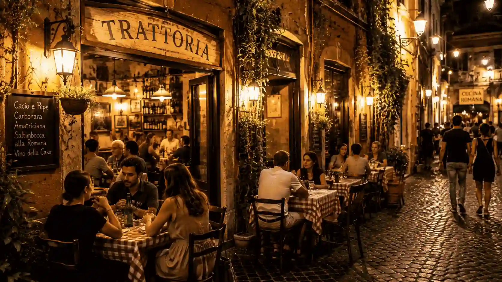
Les trattorias romaines permettent de découvrir les spécialités locales dans une ambiance conviviale et authentique, au cœur de la culture italienne.
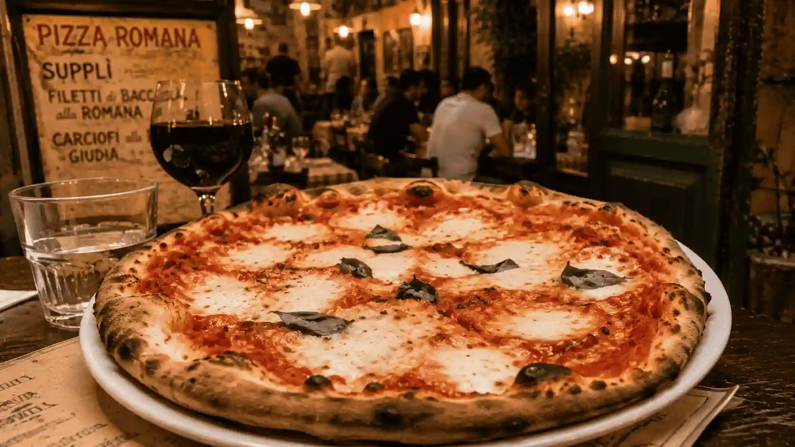
Fine, croustillante et légère, la pizza romaine possède une identité unique qui la distingue de la célèbre pizza napolitaine.
Voir les restaurants →Le quartier de Trastevere concentre certaines des meilleures adresses de Rome dans une ambiance animée qui se prolonge jusque tard dans la soirée.
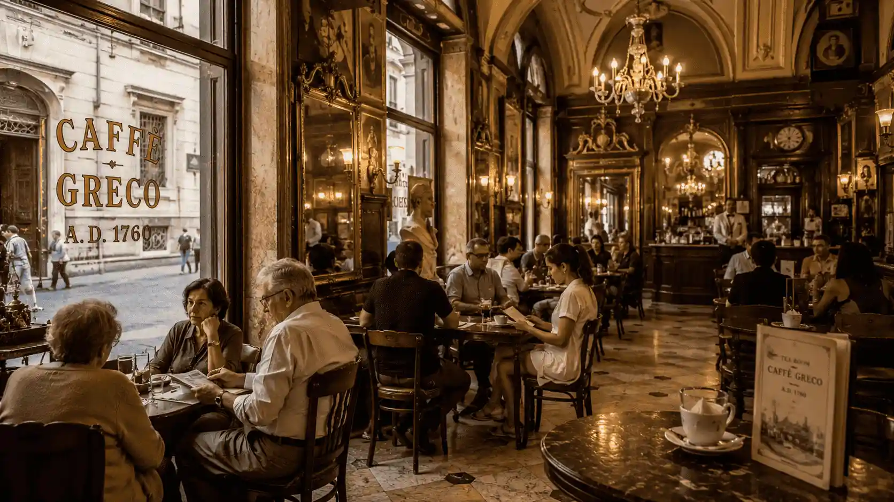
Entre espresso, pâtisseries italiennes et établissements centenaires, les cafés historiques font partie de l'art de vivre romain.

Profiter d'un verre face aux dômes, aux monuments et aux toits de Rome fait partie des plaisirs les plus appréciés de la capitale italienne.
Découvre de merveilleux restaurants sur OpenTable →Des vestiges de l'Empire romain aux chefs-d'œuvre de la Renaissance, Rome rassemble certains des monuments les plus célèbres et les plus visités du monde.
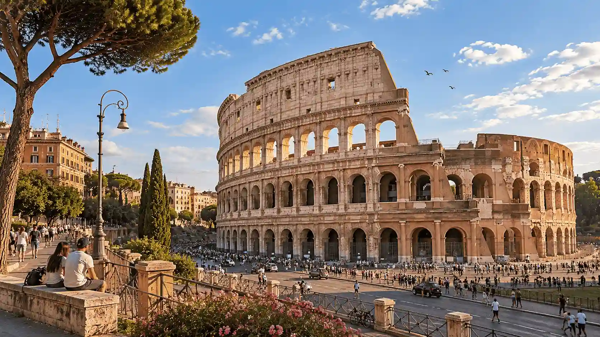
Symbole de Rome, le Colisée est l'un des amphithéâtres antiques les plus impressionnants jamais construits.
Réserver une visite →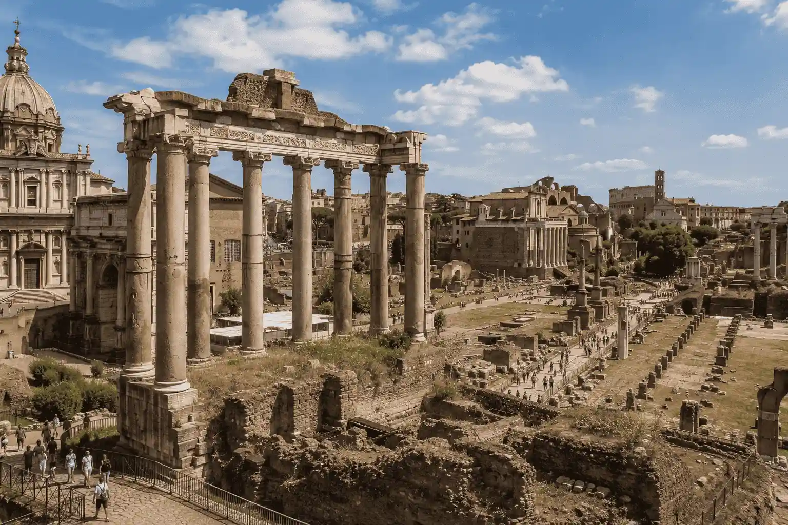
Ancien centre politique, religieux et commercial de Rome, le Forum Romain plonge les visiteurs au cœur de l'histoire antique.
Explorer le Forum →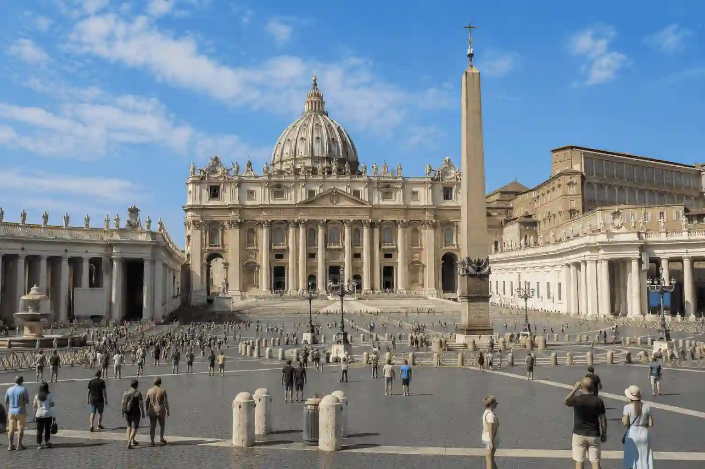
La Basilique Saint-Pierre et les musées du Vatican comptent parmi les sites les plus prestigieux d'Europe.
Voir les billets →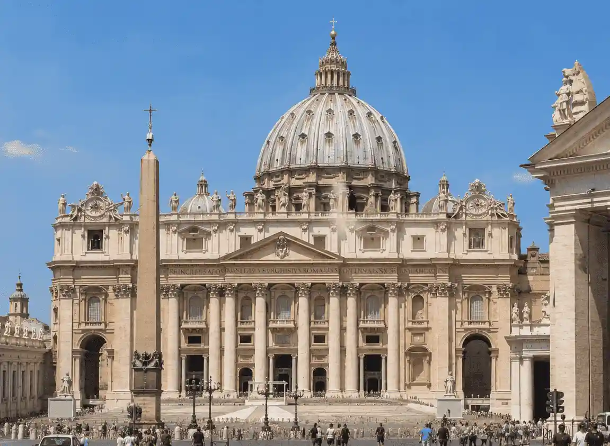
Les fresques de Michel-Ange font de la Chapelle Sixtine l'un des chefs-d'œuvre artistiques les plus célèbres au monde.
Découvrir →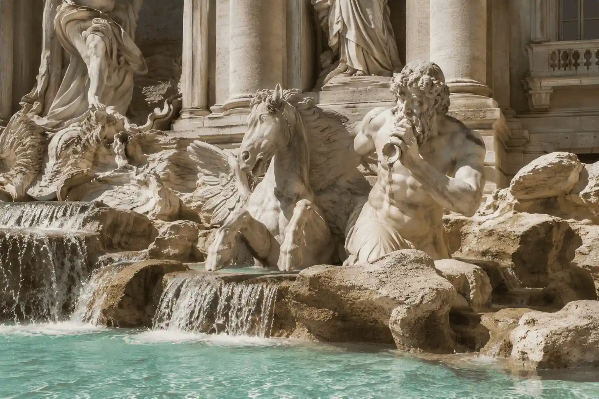
La plus célèbre fontaine d'Italie attire chaque jour des milliers de visiteurs venus perpétuer la tradition de la pièce lancée dans l'eau.
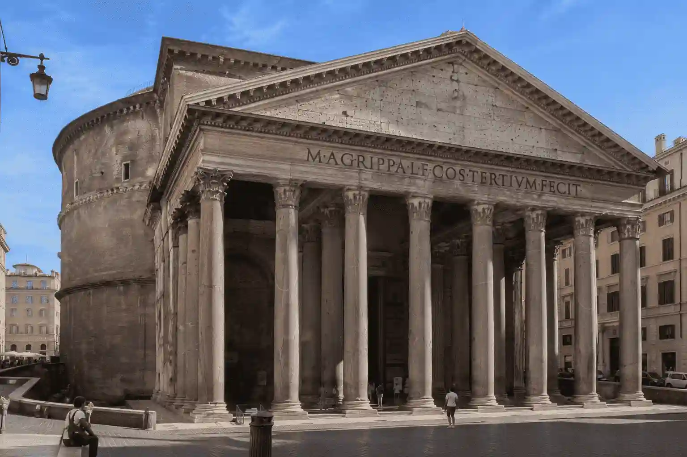
Remarquablement conservé, le Panthéon impressionne par son immense coupole et son architecture antique exceptionnelle.
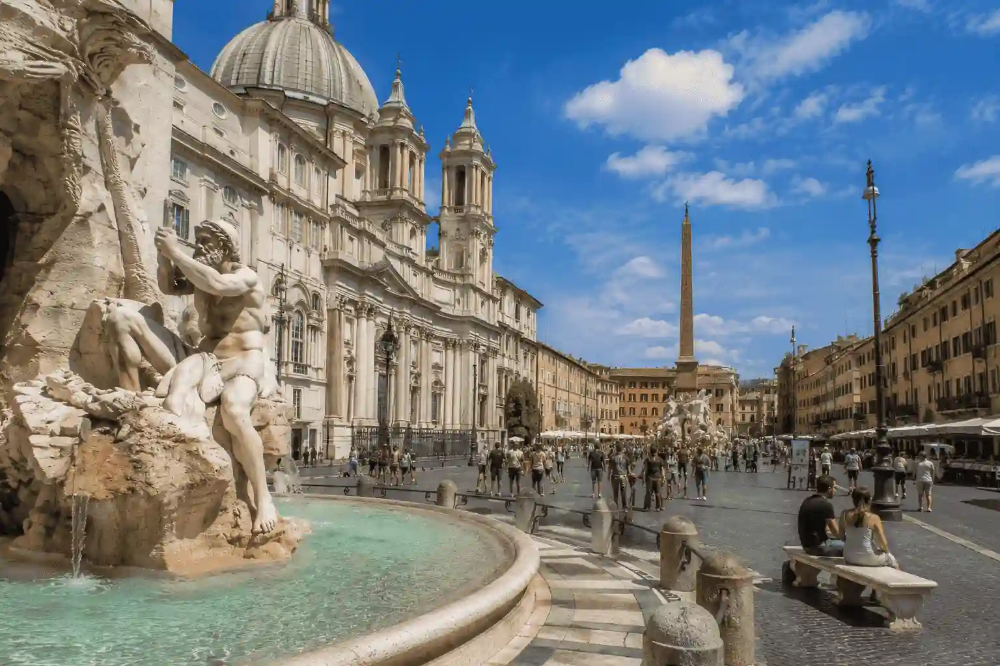
Cette place emblématique est réputée pour ses fontaines baroques, ses artistes de rue et son ambiance typiquement romaine.
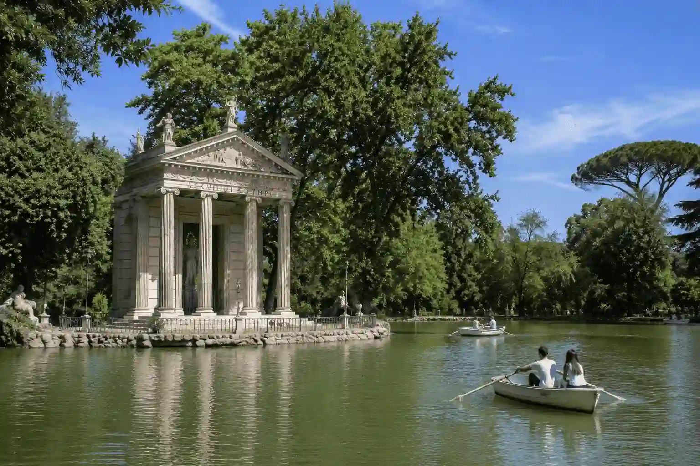
Le plus célèbre parc de Rome offre un cadre idéal pour se détendre entre jardins, musées et panoramas sur la ville.
Entre le football passionné du Stadio Olimpico, les grands tournois internationaux et les concerts d'artistes du monde entier, Rome offre des expériences sportives et culturelles uniques tout au long de l'année.
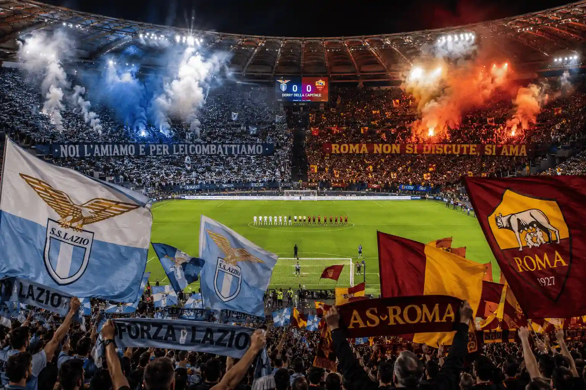
Assister à un match de l'AS Roma ou de la Lazio au Stadio Olimpico permet de découvrir l'une des ambiances les plus passionnées du football italien. Le Derby della Capitale est considéré comme l'un des plus grands derbys d'Europe.
Voir les matchs →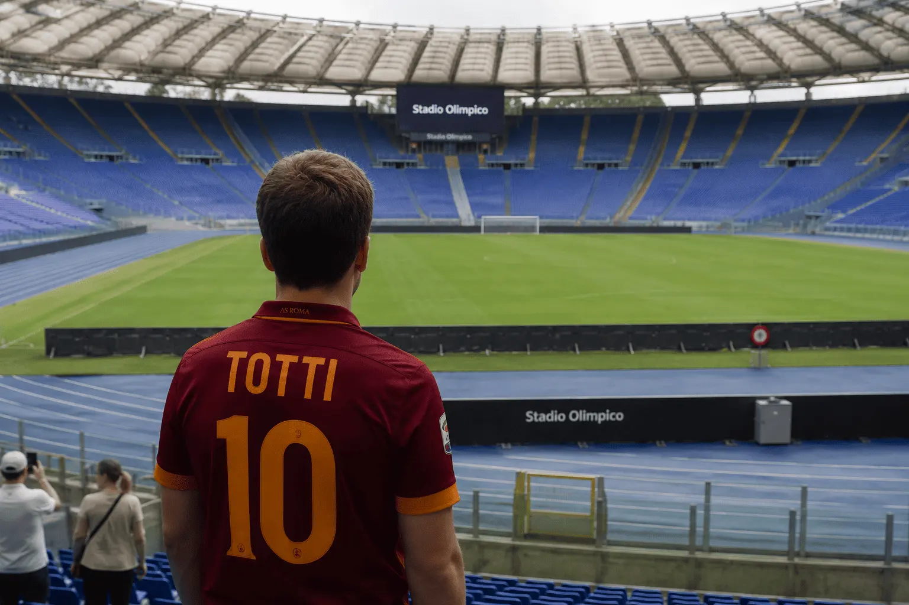
Plus grand stade de Rome, le Stadio Olimpico accueille les rencontres de l'AS Roma, de la Lazio ainsi que de nombreux événements sportifs internationaux tout au long de l'année.
Billets pour visiter le stade →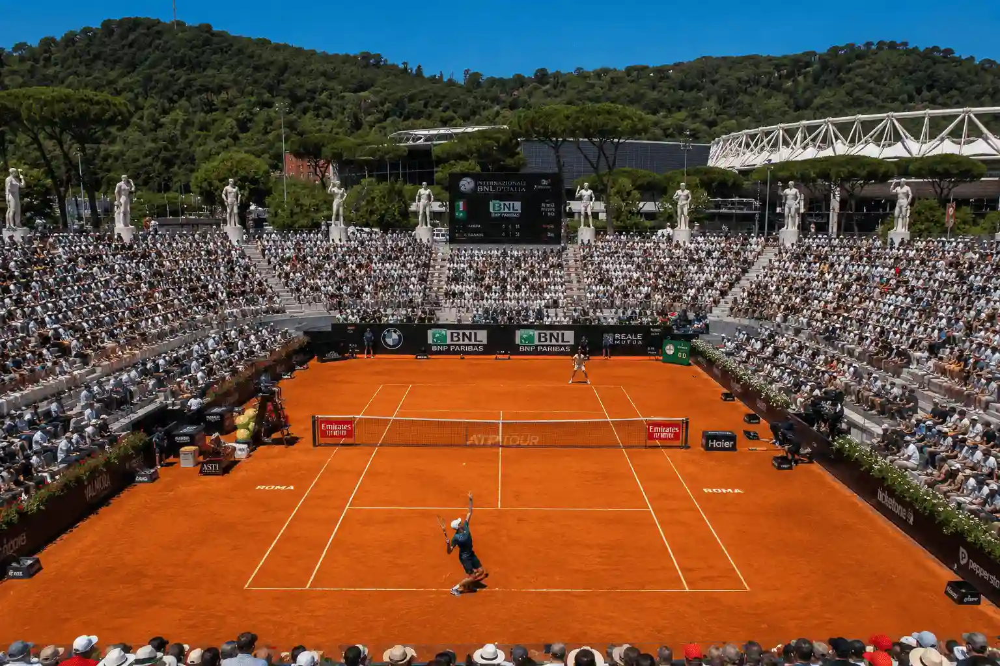
Chaque printemps, entre avril et mai, Rome accueille l'Internazionali d'Italia au Foro Italico. Ce prestigieux tournoi de tennis sur terre battue réunit les meilleurs joueurs du monde avant Roland-Garros.
Voir les billets →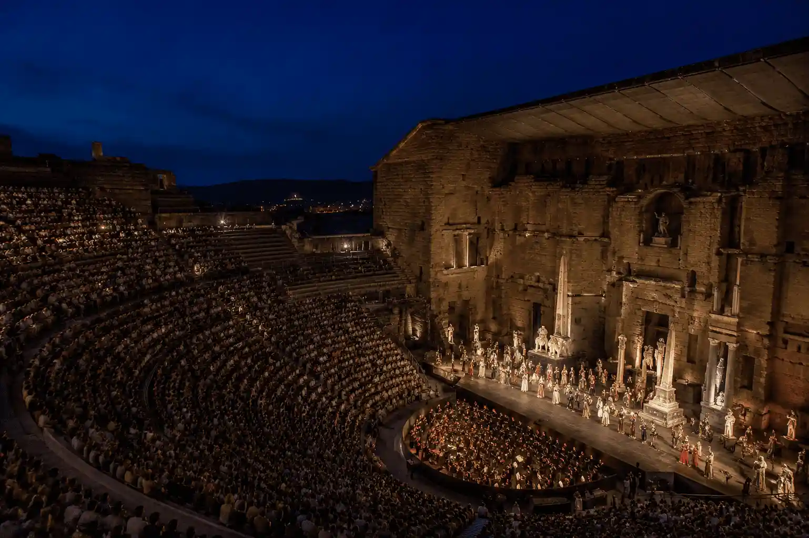
Concerts, opéras et grands spectacles attirent chaque année des artistes internationaux dans des lieux emblématiques comme le Stadio Olimpico, l'Auditorium Parco della Musica ou les Thermes de Caracalla.
Voir les concerts →Rome mélange histoire antique, gastronomie italienne, culture, football et ambiance méditerranéenne unique.
Entre le Colisée, les ruelles historiques, les trattorias italiennes et les couchers de soleil romains, Rome possède une atmosphère intemporelle.
Le métro, les bus et les scooters permettent d’explorer facilement Rome.
Trastevere et les quartiers historiques offrent certaines des meilleures spécialités italiennes.
Colisée, Vatican, Fontaine de Trevi et Piazza Navona sont incontournables.
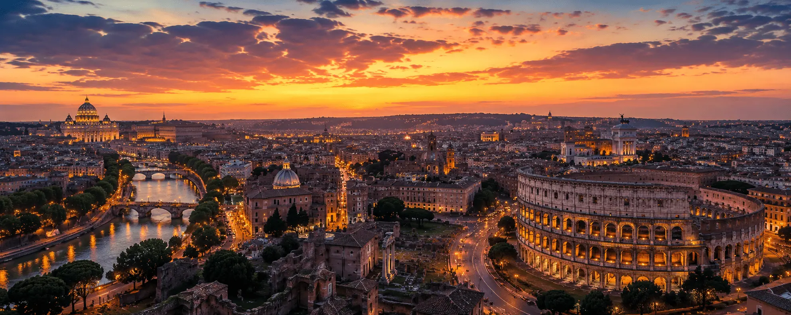